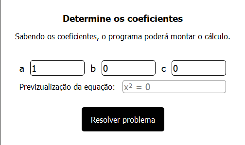
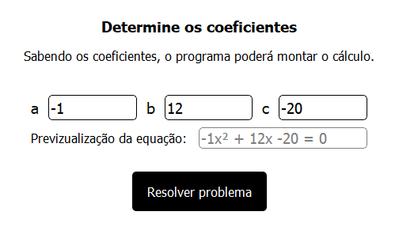
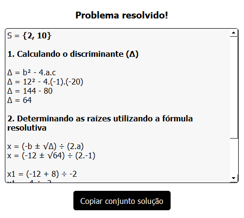

Novo programa para auxiliar nos estudos de equação do segundo grau é lançado
Se você tem dificuldade em resolver equações do segundo grau ou quer resolver mais rapidamente, chegou a solução!
O que é?
É um programa para computador que tem recursos que ajudam nos estudos das propriedades da equação do segundo grau. Ele é capaz, tanto de resolver a equação em um clique, quanto mostrar todo o cálculo passo à passo. O projeto foi desenvolvido para fins acadêmicos e estará disponível em breve para todos os usúarios.
Como funciona?
Dê uma olhada na imagem acima. Com toda certeza você entendeu como o programa funciona apenas por olhar para sua interface. Você apenas insere o valor dos coeficientes a, be c respectivamente, clica no botão para resolver e pronto!
É importanto dizer que por ora ele é capaz de resolver as equações apenas usando a fórmula de Bhaskara (por isso é essencial informar o valor dos coeficientes). Apesar disso, ele ainda é capaz de resolver qualquer equação do segundo grau, seja completa ou incompleta.
Resolvendo uma equação
Vamos supôr que queremos resolver a equação -x² + 12x - 20 = 0. O que faremos então, é abrir o programa e informar o valor de cada coeficiente. Em nossa equação hipotética, teríamos então os coeficientes a, b, c valendo respectivamente: -1, 12, -20.
Resultado após inserir os dados
Ao reparármos bem, percebemos que ainda há alguns 'bugs' que precisam ser corrigidos, já que na previzualização ele nos mostra -1x² quando é preferível -x².
Agora, ao clicarmos no botão Resolver problema, podemos obter toda a solução do problema. Veja abaixo:
Como posso baixar?
Infelizmente não há nenhuma data de lançamento confirmada, pois o projeto ainda está em desenvolvimento como mostrado nesse ártigo. Há grandes idéias que ainda serão implementadas, então podemos somente esperar um produto de qualidade.
Escrito por
José Wesley de Lima Silva
Desenvolvedor web front-end e estudante. Sou proativo, gosto de estudar e me divertir com amigos. Atualmente estou focando meus estudos em desenvolvimento de software fullstack, UI Design, UX Design e outros tipos de conhecimento que envolvam de alguma forma as boas práticas de tecnologia da informação.
Leia também
Carregando as notícias...